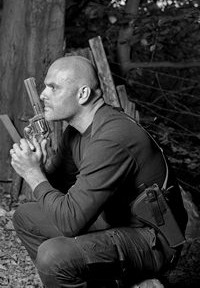

Naše hodnoty a poslanie klubu

Náš klub stojí na hodnotách fair-play, bezpečnosti, zodpovednosti a vzájomného rešpektu.
Podporujeme rozvoj športovej streľby v regióne, vytvárame priateľskú komunitu a motivujeme mladých ľudí k budovaniu disciplíny, techniky a správnych streleckých návykov. Naším cieľom je podporovať šport, ktorý spája ľudí a rozvíja ich fyzicky aj mentálne.